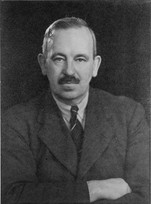
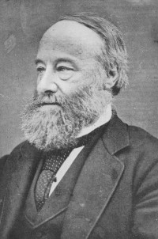
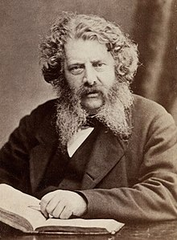
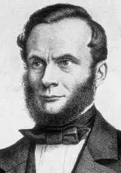
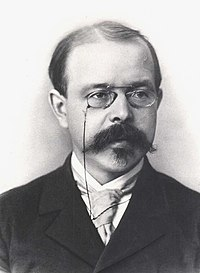

Leis da Termodinâmica
- Conceitos
- Primeira Lei
- Segunda Lei
- Terceira Lei
Conteúdo deste artigo
A Termodinâmica faz parte dos estudos de Termologia e é responsável por entender os sistemas físicos, as características deles e o processo a que estão sujeitos. Se dedica a compreender a troca de calor entre corpos e a relação deles com a realização de trabalho.
Na história, essa ciência se fortaleceu devido a criação das maquinas a calor na Primeira Revolução Industrial, onde as ondas de calor e as trocas térmicas proporcionavam o funcionamento dos dispositivos.
Através das primeiras maquinas térmicas, foi necessário compreender os fenômenos por trás desse funcionamento. O fato de todas as maquinas serem movidas por combustível fóssil tornava a sua otimização uma economia de custos, sendo assim, surge a termodinâmica, como uma ciência experimental.
Ficou mais fácil aumentar a eficiência das maquinas e favorecer a lucratividade das fabricas no século XIX através das Leis Termodinâmicas.
No contexto atual, equipamentos do nosso cotidiano utilizam princípios termodinâmicos, como carros, refrigeradores, ar condicionado e geladeiras por exemplo.
A Termodinâmica descreve as propriedades macroscópicas de um sistema partindo do conceito de transformações de energia.
Conceitos
- Sistema
- Estado
- Equilíbrio
- Processo Termodinâmico
- Temperatura
- Calor
- Energia interna
- Lei 0
Um sistema termodinâmico é o conjunto de elementos que estão sendo estudados. Ele é definido por limites preestabelecidos e, nessa região, serão observados os processos energéticos.
Cada sistema possui um estado que vai determinar suas características como pressão, temperatura, volume, massa, entropia e outros. Pode haver variação de estado em diferentes intervalos de tempo.
Ao tornar-se imutável, o estado de um sistema encontra-se em uma situação de equilíbrio termodinâmico, onde não são notadas as trocas de energia ou massa, reações químicas e nem a atuação de forças externas.
Ao acontecer as trocas de energia ou transformações físico-químicas o sistema se altera, e a alteração de um estado para outro é chamado de Processo Termodinâmico.
Uma grandeza física escalar que mede a agitação nas moléculas de um determinado corpo em um momento especifico. Quanto maior a temperatura, mais agitada as partículas estão, e quanto menor essa grandeza, mais calmas elas se encontram. Sua unidade de medida padrão é o Kelvin (K). Cotidianamente, entretanto, os termômetros fornecem valores em Celsius (ºC), no Brasil; e em Fahrenheit (Fº), nos Estados Unidos da América.
Quando dois sistemas diferentes entram em contato, a energia é transferida do corpo de maior agitação molecular para aquele que possui menor grau termométrico. A energia térmica em trânsito recebe o nome de calor, medido em calorias (cal) ou joules (J).
Mensura a soma da energia cinética das partículas em um corpo, portanto, quanto maior a temperatura, maior a agitação das moléculas, maior o valor da energia cinética e maior a energia interna do sistema.
Serve como base para a construção dos termômetros.
Estabelece que dois sistemas em equilíbrio térmico com um terceiro estão em equilíbrio térmico entre si.
Justifica o conceito de Temperatura como sendo a propriedade que sendo igual para dois sistemas mostra que estão em equilíbrio térmico.
Em termos mais práticos, para sabermos se dois sistemas possuem a mesma temperatura não é necessário coloca-los em contato térmico entre si, basta verificar se os dois estão em equilíbrio térmico através de um terceiro corpo, o termômetro.
Esses dois sistemas diferentes foram colocados em contato com no outro através de uma parede imóvel, impermeável a passagem de material, mas que permite ainda a passagem de energia por calor. Quando as propriedades dos sistemas deixam de variar, eles alcançam o equilíbrio térmico.
Consideremos que o sistema A está em equilíbrio térmico com o termômetro, ele indica a temperatura TA e quando o sistema B está em equilíbrio com o termômetro, se indica a temperatura TB. Então se TA = TB, os sistemas A e B estão em equilíbrio térmico entre si.
Lei do 0: história
A lei zero da termodinâmica ganhou esta denominação por causa de Ralph H. Fowler (1889- 1944), um físico inglês. Após estudos e experiências, chegou ao postulado no século XX.
Apesar de ter formulado a base do conhecimento que envolve as trocas de calor entre os corpos, existiu a necessidade de estruturar a apresentação da lei na termodinâmica, pois a primeira e a segunda lei já faziam parte dos conceitos de termodinâmica.
Para resolver a questão, foi pensado o termo lei zero, usado pela física até os dias atuais. Fowler começou o processo de busca por respostas para a questão da sensação de frio ou calor, fenômeno que ainda gera debate e estudo no meio científico, especialmente por envolver a temperatura.
Importância da lei 0 na Termodinâmica
No mundo, existem materiais que têm alta condutividade térmica e outros com baixa condutividade. Por exemplo, o ferro e a madeira, o ferro apresenta uma condutividade bem mais elevada.
É por isso que os fósforos são de madeira. Isso garante a queima do utensílio sem que a mão possa sentir muito calor.
Com é possível observar, a humanidade precisa de um método confiável de reprodução e aferição do calor ou frio. Nesse sentido, baseados na lei zero da termodinâmica, os objetos desenvolvidos para fazer tais medidas são chamados de termômetros.
Primeira Lei
Para entender melhor a Primeira Lei da Termodinâmica, é preciso ter em mente o Princípio da Conservação das Energias, muito importante para diversas áreas da Física.
Esse princípio que rege os estudos físicos transmite a ideia de que, em um sistema termodinâmico, a energia nunca “desaparece”: ela pode ser perdida para o meio em que se encontra, absorvida ou transformada por um corpo, mas sempre se mantém na mesma quantidade.
A partir disso, a Primeira Lei da Termodinâmica ela trata de tr√™s grandes conceitos, que estão muito presentes nas máquinas t√©rmicas: energia interna (U), trabalho (ùùâ) e calor(Q).
A energia interna de um corpo é aquela que está presente no movimento e posição dos átomos e moléculas que o constituem.
Como sabemos da química, quando um corpo ganha temperatura, as partículas atômicas tornam-se mais agitadas, por isso a energia interna desse objeto estará aumentando. Do lado oposto, quando a temperatura diminui, a movimentação dos átomos diminui e a energia interna será menor.
O trabalho realizado por um corpo trata de uma transferência de energia com geração de uma força. Por exemplo, em máquinas a vapor, o trabalho resulta na movimentação dos pistões — causada pela expansão do vapor dentro do sistema.
Definição de calor: A energia em trânsito em um ambiente. Essa grandeza é estudada pela calorimetria, dada sua influência nos estados físicos de um material.
A energia interna U de um sistema é a soma das energias cinéticas e das energias potenciais de todas as partículas que formam esse sistema e, como tal, é uma propriedade do sistema. Isto significa que qualquer variação ΔU na energia interna só depende do estado inicial e do estado final do sistema no processo considerado.
A primeira Lei da Termodinâmica estabelece: se um sistema troca energia com a vizinhança por calor e por trabalho, então a variação da sua energia interna é dada por:
ΔU = Q – W
Esta lei representa a aplicação do princípio de conservação da energia a sistemas termodinâmicos.
W representa a quantidade de energia transferida do sistema para a vizinhança por trabalho
Q representa a quantidade de energia transferida da vizinhança para o sistema por calor. Por isso:
W > 0: o sistema se expande e perde energia para a vizinhança.
W < 0: o sistema se contrai e recebe energia da vizinhança.
Q > 0: a energia por calor passa da vizinhança para o sistema.
Q < 0: a energia por calor passa do sistema para a vizinhança.
Embora ΔU só dependa do estado inicial e do estado final do sistema, porque representa a variação da sua energia interna, as quantidades de energia W e Q dependem, também, do processo que leva o sistema do estado inicial ao estado final.
Para discutir essa propriedade importante da energia interna vamos considerar uma amostra de gás que é levada do estado 1 para o estado 2 por três processos diferentes.

Primeira Lei: história
A primeira lei da termodinâmica foi anunciada por Julius Robert von Mayer em 1841. Mayer foi a primeira a verificar a transformação do trabalho mecânico em calor e vice-versa.
Essas verificações foram feitas ao mesmo tempo que Joule, mas separadamente. Ambos no século XIX.
As primeiras declarações completas da lei vieram em 1850 de Rudolf Clausius e William Rankine. A afirmação de Rankine é considerada menos diferente da de Clausius.
  Segunda Lei
Dentre as duas leis da termodinâmica, a segunda é a que tem maior aplicação na construção de máquinas e utilização na indústria, pois trata diretamente do rendimento das máquinas térmicas.
Dois enunciados, aparentemente diferentes ilustram a 2ª Lei da Termodinâmica, os enunciados de Clausius e Kelvin-Planck:
- Enunciado de Clausius:
- Enunciado de Kelvin-Planck
O calor não pode fluir, de forma espontânea, de um corpo de temperatura menor, para um outro corpo de temperatura mais alta.
Tendo como consequência que o sentido natural do fluxo de calor é da temperatura mais alta para a mais baixa, e que para que o fluxo seja inverso é necessário que um agente externo realize um trabalho sobre este sistema.
É impossível a construção de uma máquina que, operando em um ciclo
termodinâmico,
converta toda a quantidade de calor recebido em trabalho.
Esse enunciado nos diz que nenhuma máquina térmica é capaz de transformar em trabalho todo o calor que recebe.
Terceira Lei
A Terceira lei da Termodinâmica sustenta a ideia de que a entropia de um sistema com temperatura igual a zero absoluto tem uma constante pouco variável. A teoria explica que quanto mais próximo da temperatura de zero absoluto um sistema estiver, mais a entropia se aproximará de zero. A entropia se tornará absoluta também.
Para entender melhor essa definição é preciso se apropriar do conceito de entropia.
- Entropia
A entropia se desenvolveu junto com os estudos das Leis da Termodinâmica. De acordo com as definições da termodinâmica, a energia pode ser transportada de um sistema para o outro em forma de calor ou trabalho.
A entropia pode ser definida da seguinte forma: a maneira em que as moléculas estão organizadas dentro de um sistema.
A entropia é uma medida termodinâmica que calcula o nível de irreversibilidade de um conjunto. Sendo que esse conjunto se encontra em desordem. Essa desordem caracteriza por movimento, porque as moléculas ficam em agitação, algumas mais do que as outras.
Quanto mais as moléculas se movimentam, maior a sua desordem e, por consequência, a sua entropia também aumenta.
O que a entropia se dispõe a calcular é: qual a quantidade de energia que não pode mais ser convertida em trabalho? Em quais variações termodinâmicas e em que temperatura?
De acordo com a Segunda lei da Termodinâmica, o trabalho mecânico é convertido em calor. Em seguida, o trabalho passa para a forma de energia térmica. Só que nem toda a energia térmica é utilizada. Boa parte dela é perdida no meio. Bom seria se não houvesse perda de energia, mas isso não é possível. A energia térmica não pode ser transformada novamente em trabalho. O processo de entropia é irreversível.
Logo, a entropia é medida de acordo com essa energia térmica que não pode ser aproveitada. A entropia é igual a quantidade de energia térmica que em determinada temperatura não consegue realizar trabalho.
O que esse postulado apresenta é: toda vez que um sistema estiver próximo do zero absoluto (“0” na escala Kelvin e “-273.75” em graus Celsius) a entropia dele será constante ou igual a zero.
A fórmula da Terceira lei da Termodinâmica proposta por Walther Nernst ficou assim:
lim = 0 ∆S =0
T = 0
Em que:
∆S = variação da entropia
T = temperatura
No início das suas pesquisas, Nernst afirmava que essa entropia poderia ser provada se fossem utilizados cristais perfeitos, mas depois concluiu que essa temperatura (zero absoluto) não existia.
No entanto, as pesquisas não pararam. Muito tempo depois, outros pesquisadores acabaram descobrindo que o zero absoluto poderia ser encontrado apenas nos gases. Nenhuma substância sólida ou líquida conseguiria chegar a essa temperatura.
- Terceira Lei: história 
A Terceira lei da Termodinâmica foi elaborada por Walther Hermann Nernst, um físico-químico alemão. Além dos estudos na área da termodinâmica, desenvolveu pesquisas nos campos da eletroquímica e fotoquímica. Por causa do seu trabalho, a físico-química moderna teve grande avanço.
Entre 1906 e 1912, Hermann elaborou o teorema do calor ou Terceira Lei da Termodinâmica.
De acordo com o proposto pelo físico, sempre que um sistema estiver próximo da temperatura do zero absoluto ( -273.15 graus Celsius) a entropia terá um valor mínimo. A lei oferecia, portanto, um ponto de partida para determinar o valor da entropia.